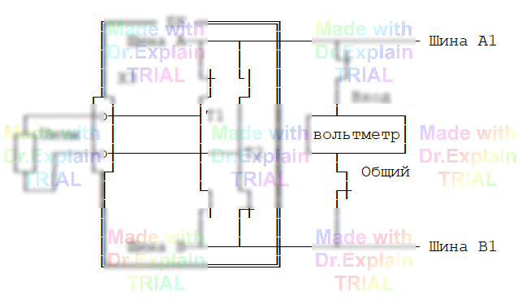

5.2.7 Команда КН — контроль напряжения
Команда измеряет напряжение на заданных точках/шинах ОК и выводит результат в протокол. Существует две модификации:
- КН‑1 — однократное измерение (без задания времени контроля);
- КН‑2 — многократное измерение в заданном интервале времени (c «стимулом»).
5.2.7.1 КН‑1 — без времени контроля
<метка> КН [<Umin><В<<Umax>] [ключи] *список_точек/шин*
| Параметр | Диапазон | По умолчанию |
|---|---|---|
| Umin, Umax | 0.1 – 100 В (любая/обе границы) | Нет |
| Ключи |
Ш — измерять «шина‑шина»Т — «точный» вольтметр (±1 %)
|
— |
Допустимая погрешность
- с ключом
Т: ±1 % во всём диапазоне; -
без
Т:- 0.1 – 1 В — ±5 %;
- 1 – 100 В — ±2 %.
Список точек/шин разбивается символом «*» на фрагменты. Для каждого фрагмента первая точка (шина) — общая; напряжение измеряется между ней и каждой последующей.
Полярность задаётся перед точкой/шиной: «+», «–» или «~» (переменное U). Оператор
«~» автоматически включает ключ Т. Если оператор стоит
перед общей точкой, он распространяется на весь фрагмент.
Пример КН‑1:
270 КН 3<В<5, Ш *A1,+B1*
5.2.7.2 КН‑2 — c заданием интервала времени
<метка> КН <Umin><В<<Umax>, <tmin><мс<<tmax> [, ключи] *Точка1, Точка2* <метка> <ПТ | ОТ | ГИ> … ← обязательный «стимул»
| Ограничения | Значение |
|---|---|
| Точки/шины | только две (пара) |
| Интервал t |
1 – 99 990 мс; длительность ≥ 100 мс; верхняя граница обязательна |
| Ключи |
И (импульсная форма), Ш;Т и оператор «~» запрещены
|
Отсчёт времени начинается в момент запуска следующей команды‑«стимула»
(ПТ, ОТ или ГИ). Измерения проводятся
многократно в течение tmax‑tmin.
Критерий «Норма»
- Без ключа
И— все измерения попадут в диапазон. - С ключом
И— хотя бы одно значение попадёт в диапазон.
Пример КН‑2 (из руководства):
275 КН 120<мВ<400, 220<мс<850, И *Ш3/35,-А53* 277 ПТ *A1:Ш2/23*
Допустимая погрешность КН‑2 совпадает с погрешностью КН‑1 без ключа Т:
±5 % (0.1 – 1 В) и ±2 % (1 – 100 В).
Типовая схема измерения напряжения (КН‑1)
